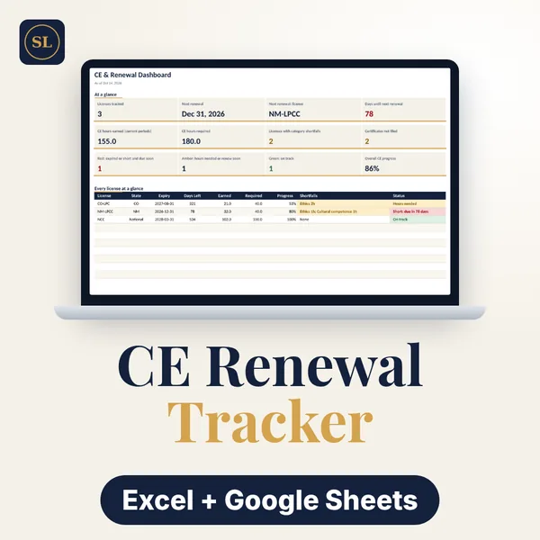
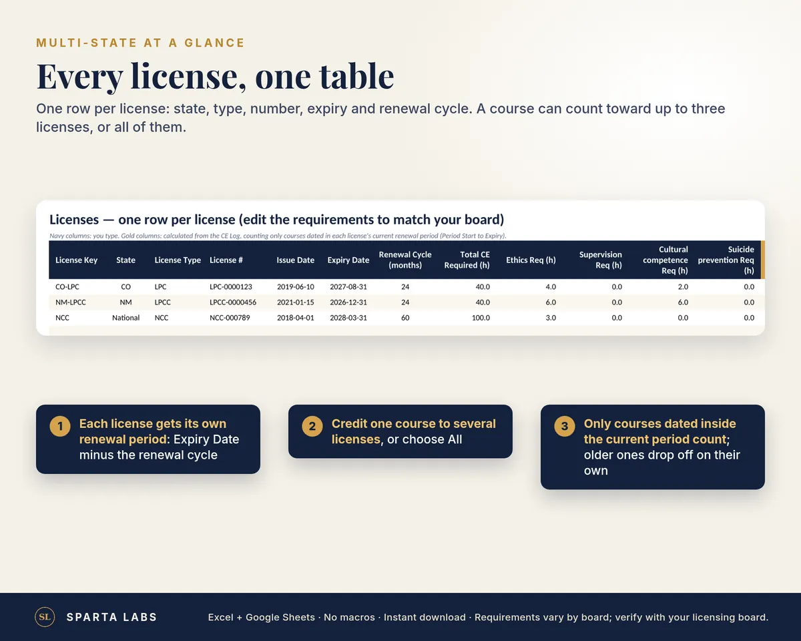
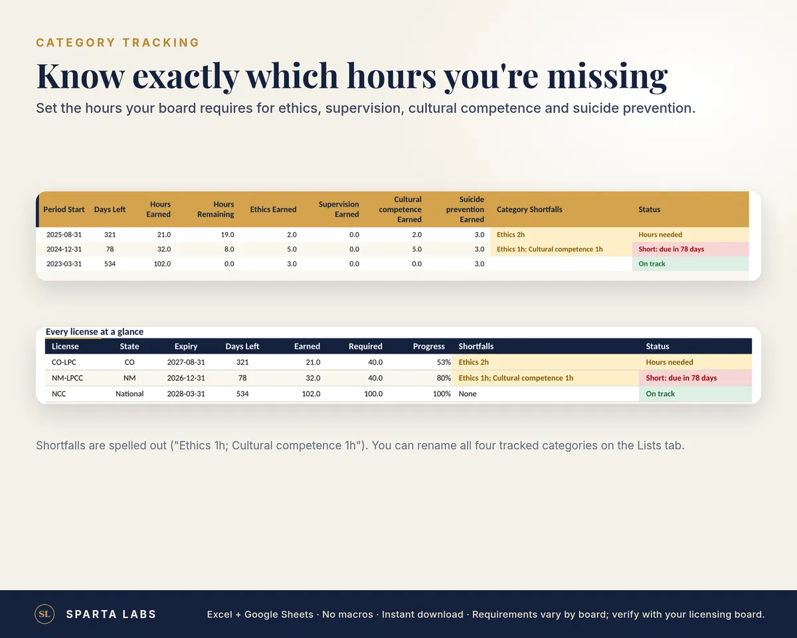
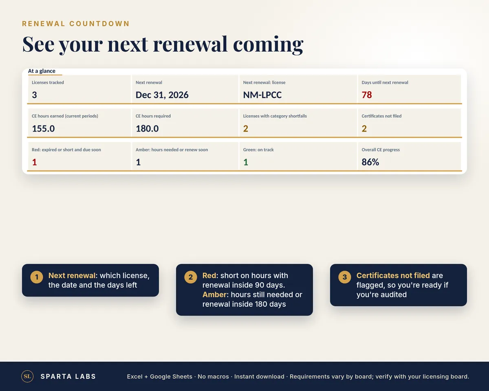
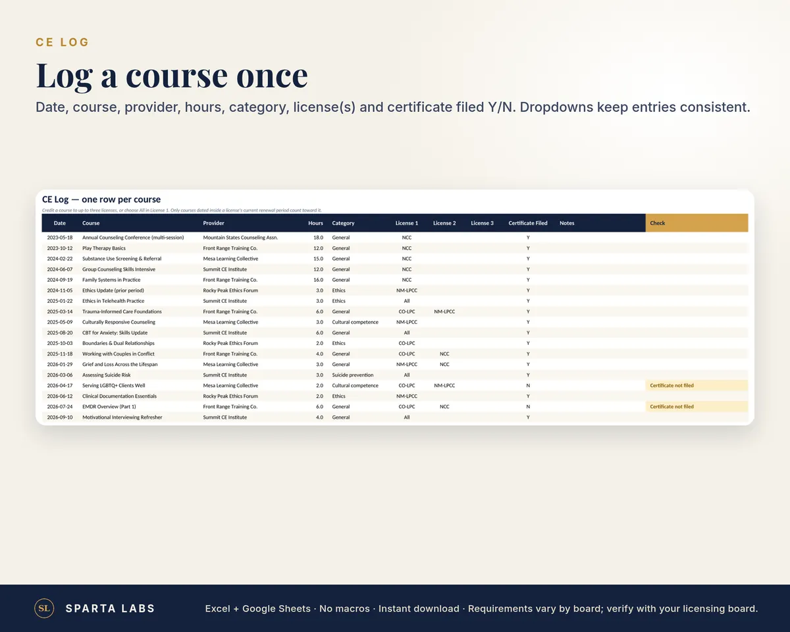

Continuing education tracker for therapists
Log every license, renewal date and continuing education hour in one workbook, even if you're licensed in more than one state. A $9 CE tracker for Excel and Google Sheets, no subscription.
Delivery: instant digital download after purchase. No physical product is shipped.
What a CE tracker does
A CE tracker keeps continuing education hours, the topics your board requires (ethics and the other categories it names), renewal dates and certificates in one place, so you can see what's still outstanding before a license comes due.
What it does
- One row per license or certification: state, type, number, issue and expiry dates, renewal cycle and total CE hours required
- Your own category requirements per license: ethics, supervision, cultural competence and suicide prevention (rename them to match your board)
- Log each course once and credit it to up to three licenses, or to All
- Only courses dated inside each license's current renewal period count, so old hours drop off on their own after you renew
- Dashboard: next renewal and days left, hours earned vs. required, category shortfalls spelled out ("Ethics 1h"), and a red / amber / green status for each license
- Flags certificates you haven't filed yet
What's included
- SAMPLE workbook (fictional counselor licensed in CO and NM, plus a national certification)
- BLANK workbook, ready for your licenses
- Setup Guide PDF (Excel, Google Sheets and LibreOffice)
Works with: Excel 2016+ / Microsoft 365 on Windows and Mac, Google Sheets, LibreOffice Calc. Windows, Mac & Linux. Linux: use Google Sheets or LibreOffice Calc.
No macros or add-ons. Formulas are protected with no password; input cells stay editable. No client information of any kind.
Requirements vary by board; verify with your licensing board. This is an organizational template, not legal or licensing advice.
These are spreadsheet templates. They are not an EHR, and they are not a HIPAA compliance solution. You are responsible for how you store and protect client information.
Digital download. Nothing physical ships. One license per buyer; for use in your own practice.
Common questions
What is a CE tracker for therapists?
A continuing education tracker for therapists is a workbook for logging CE hours, required topics and license renewal dates, so you can see what each board still needs.
Can I track CE hours for licenses in more than one state?
Yes. Give each license its own row and rules, log each course once, and credit it only to the boards that accept it. How do counselors track CE hours when they're licensed in more than one state?
Does this work in Excel and Google Sheets?
Yes, and in LibreOffice Calc. No macros.
Is this CE tracking software or a subscription?
No. It is a one-time $9 spreadsheet template.
Is this an EHR, or does it store client information?
No. These are spreadsheet templates. They are not an EHR, and they are not a HIPAA compliance solution. You are responsible for how you store and protect client information. No client information of any kind.
How do I get ready for a CE audit?
A CE audit usually asks you to prove the hours you reported at renewal. Keep one log of every course and a saved certificate for each one. How do I get ready for a CE audit from my licensing board?
Related questions: How do I track CE credits for license renewal?, How do counselors track CE hours when they're licensed in more than one state?, and How do I get ready for a CE audit from my licensing board?



